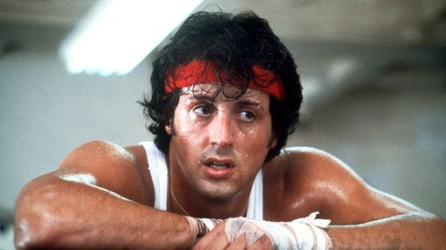

Ce document a été réalisé par Gaspard Brun
Le réalisateur se nomme John G. Avildsen et le film est sorti en 1977
Rocky Balboa est interpreté par Silvester Stalone
Adrian est interpreté par Talia Shire
Paulie est interpreté par Burt Young
Mickey est interpreté par Burgess Meredith

Il s'agit d'un film d'action
Rocky Balboa travaille pour Tony Gazzo, un usurier,
et dispute de temps à autre des combats de boxe pour quelques dizaines de dollars sous l'appellation de l'Étalon Italien.
Cependant, Mickey, propriétaire du club de boxe où Rocky a l'habitude de s'entraîner,
décide de céder son casier à un boxeur plus talentueux.